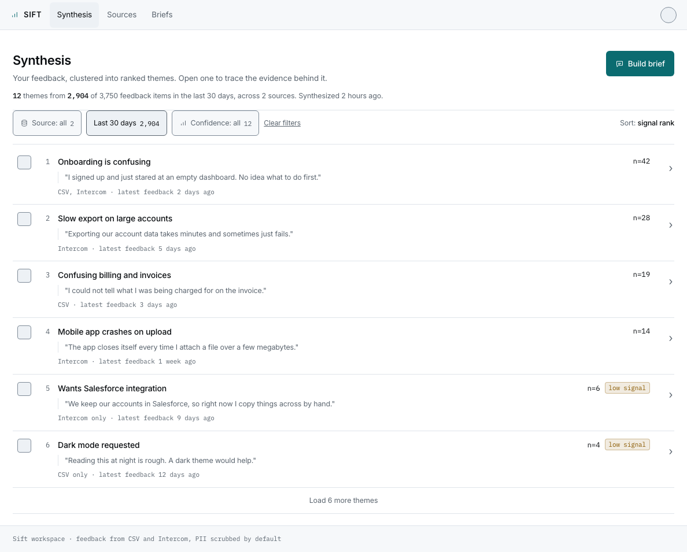
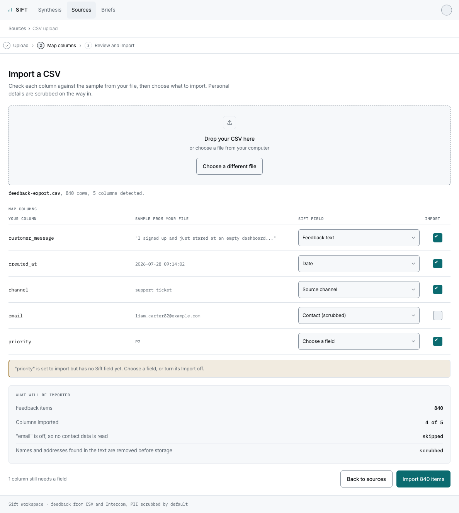

Pixel proof
Every colour screen moved from kit.css to design/system/index.css, and kit.css is deleted. The question this page answers: does the product look the way it did, except where a change was decided out loud? Zero difference is not expected. This stage changed the look on purpose, and every change is a named line in docs/tokens-audit.md. So the proof is that every differing pixel is explained by one of those lines, and that no line claims a change the product does not show.
How it was measured
Before is the product as Step 1 took its census: commit 2aa7baa, served as it was, every screen on kit.css. Step 1 measured computed styles and did not keep frames, so the frames were rendered now from that commit rather than re-taken from today's files, which would have erased exactly what this page compares against. After is the same 22 screens today, on the system. Both in the shipped dark theme, full page, motion off, at 360 and at 1440, then cropped to the product canvas: the stage panel beside the screen is prototype chrome and changed in this step for its own reason, the theme switch.
Two instruments, run on the same pairs. A pixel comparison (any channel more than 8 apart) finds WHERE something differs; a computed-style comparison of every element, matched in DOM order, finds WHAT differs and in which property. The element counts were equal on all 44 pairs. Each difference was then assigned to a line of the three named lists; the table below is the result, and a row with nothing to assign would have been a defect fixed in tokens.css or a component file, never on a screen.
Look at any pair
The count is computed here, in your browser, from the two committed frames in design/kit/screens/proof/.
Every difference, and the line that explains it
| Code | Line in tokens-audit.md | Was | Now |
|---|---|---|---|
| S4 | Foundations review (Step 4): --line-control, dark | #3A444C, 1.76 on a card | #647280, 3.55 on a card. Reaches every field, select, checkbox, and the three non-control rings the system declares as identifying: the done step, the numbered circle on 0.0, the drop zone edge |
| S6a | Step 6: the Step 4 --line-control row, corrected | outlined button and chip at rest on the hairline #262D34 | #647280, the control line |
| S6b | Step 6: .chip.is-on border | #3A444C | --line-hover #868F99, one step above its own off state |
| S6c | Step 6: button, input, select, textarea take font: inherit; letter-spacing: inherit; color: inherit | a button label in Arial on some tags, browser tracking and line height | Inter, the body tracking, inherited line height: widths 1 to 5px apart, the load-more row 0.75px taller, and whatever stands after them moves by that much |
| S6d | Step 6: .toolbar-row on 4.0, 4.1, 6.1, 6.2 | the evidence chips hidden at 820 and below | the chips wrap at every width; at 360 the screen is taller and everything under the toolbar moves down |
| S7 | Applied late at Step 7, under the Step 4 rule: .avatar border | --line-hairline, 1.26 | --line-control, 3.55 |
| Screen | Width | What differs, and the line |
|---|---|---|
| 0.0 Home | 360 | outlined button boundaries S6a; the numbered circles S4 |
| 0.0 Home | 1440 | outlined button boundaries S6a; the numbered circles S4 |
| 2.0 Synthesis | 360 | the avatar ring S7; chip boundaries at rest S6a; control type inherits: tracking, line height, widths, the load-more row 0.75px taller S6c; the chip that is on S6b; checkbox boundaries S4; outlined button boundaries S6a |
| 2.0 Synthesis | 1440 | the avatar ring S7; chip boundaries at rest S6a; control type inherits: tracking, line height, widths, the load-more row 0.75px taller S6c; the chip that is on S6b; checkbox boundaries S4; outlined button boundaries S6a |
| 2.1 Synthesis, first run | 360 | the avatar ring S7 |
| 2.1 Synthesis, first run | 1440 | the avatar ring S7 |
| 2.2 Synthesis, loading | 360 | the avatar ring S7; the done step ring S4 |
| 2.2 Synthesis, loading | 1440 | the avatar ring S7; the done step ring S4 |
| 2.3 Synthesis, error | 360 | the avatar ring S7; outlined button boundaries S6a |
| 2.3 Synthesis, error | 1440 | the avatar ring S7; outlined button boundaries S6a |
| 3.0 Sources | 360 | the avatar ring S7; outlined button boundaries S6a |
| 3.0 Sources | 1440 | the avatar ring S7; outlined button boundaries S6a |
| 3.0 Sources, empty | 360 | the avatar ring S7; outlined button boundaries S6a |
| 3.0 Sources, empty | 1440 | the avatar ring S7; outlined button boundaries S6a |
| 3.0 Sources, sync error | 360 | the avatar ring S7; outlined button boundaries S6a |
| 3.0 Sources, sync error | 1440 | the avatar ring S7; outlined button boundaries S6a |
| 3.2 Import a CSV | 360 | the avatar ring S7; the done step ring S4; the drop zone edge S4; outlined button boundaries S6a; control type inherits: tracking, line height, widths, the load-more row 0.75px taller S6c; select boundaries S4; checkbox boundaries S4 |
| 3.2 Import a CSV | 1440 | the avatar ring S7; the done step ring S4; the drop zone edge S4; outlined button boundaries S6a; control type inherits: tracking, line height, widths, the load-more row 0.75px taller S6c; select boundaries S4; checkbox boundaries S4 |
| 4.0 Theme | 360 | the avatar ring S7; the evidence chips appear at 360 and the content below moves down S6d; chip boundaries at rest S6a; control type inherits: tracking, line height, widths, the load-more row 0.75px taller S6c; the chip that is on S6b |
| 4.0 Theme | 1440 | the avatar ring S7; chip boundaries at rest S6a; control type inherits: tracking, line height, widths, the load-more row 0.75px taller S6c; the chip that is on S6b |
| 4.0 Theme, error | 360 | the avatar ring S7; outlined button boundaries S6a |
| 4.0 Theme, error | 1440 | the avatar ring S7; outlined button boundaries S6a |
| 4.0 Theme, loading | 360 | the avatar ring S7 |
| 4.0 Theme, loading | 1440 | the avatar ring S7 |
| 4.1 Theme, low signal | 360 | the avatar ring S7; the evidence chips appear at 360 and the content below moves down S6d; chip boundaries at rest S6a; control type inherits: tracking, line height, widths, the load-more row 0.75px taller S6c; the chip that is on S6b |
| 4.1 Theme, low signal | 1440 | the avatar ring S7; chip boundaries at rest S6a; control type inherits: tracking, line height, widths, the load-more row 0.75px taller S6c; the chip that is on S6b |
| 6.0 Briefs | 360 | the avatar ring S7; outlined button boundaries S6a |
| 6.0 Briefs | 1440 | the avatar ring S7; outlined button boundaries S6a |
| 6.0 Briefs, empty | 360 | the avatar ring S7 |
| 6.0 Briefs, empty | 1440 | the avatar ring S7 |
| 6.1 Build brief | 360 | the avatar ring S7; field boundaries S4; control type inherits: tracking, line height, widths, the load-more row 0.75px taller S6c; the evidence chips appear at 360 and the content below moves down S6d; chip boundaries at rest S6a; outlined button boundaries S6a |
| 6.1 Build brief | 1440 | the avatar ring S7; field boundaries S4; control type inherits: tracking, line height, widths, the load-more row 0.75px taller S6c; chip boundaries at rest S6a; outlined button boundaries S6a |
| 6.1 Build brief, thin evidence | 360 | the avatar ring S7; field boundaries S4; control type inherits: tracking, line height, widths, the load-more row 0.75px taller S6c; the evidence chips appear at 360 and the content below moves down S6d; chip boundaries at rest S6a; outlined button boundaries S6a |
| 6.1 Build brief, thin evidence | 1440 | the avatar ring S7; field boundaries S4; control type inherits: tracking, line height, widths, the load-more row 0.75px taller S6c; chip boundaries at rest S6a; outlined button boundaries S6a |
| 6.2 Share link | 360 | the avatar ring S7; field boundaries S4; control type inherits: tracking, line height, widths, the load-more row 0.75px taller S6c; outlined button boundaries S6a |
| 6.2 Share link | 1440 | the avatar ring S7; field boundaries S4; control type inherits: tracking, line height, widths, the load-more row 0.75px taller S6c; outlined button boundaries S6a |
| 6.2 Share link, loading | 360 | the avatar ring S7 |
| 6.2 Share link, loading | 1440 | the avatar ring S7 |
| 6.4 Shared brief | 360 | none |
| 6.4 Shared brief | 1440 | none |
| 7.0 Account | 360 | the avatar ring S7 |
| 7.0 Account | 1440 | the avatar ring S7 |
| 7.2 Data and privacy | 360 | the avatar ring S7; control type inherits: tracking, line height, widths, the load-more row 0.75px taller S6c; outlined button boundaries S6a |
| 7.2 Data and privacy | 1440 | the avatar ring S7; control type inherits: tracking, line height, widths, the load-more row 0.75px taller S6c; outlined button boundaries S6a |
The reverse check: lines with no visible difference
A named change that the product does not show is either a change that never arrived or a list that lies. Every line of the three lists was held against the 44 pairs.
| Line | Seen on the sample? | Why |
|---|---|---|
Step 4: --text-danger (dark) #E5484D to #EB6266 | no | No screen of the sample carries small red ink at rest. The change is real: it shows on the frozen Stage 07 kit, on the field error line, measured by the same computed-style comparison |
Step 4: --line-control (light) | no, by construction | The proof runs in the shipped theme, dark. The light value was measured in the theme pass below (3.30 on a card) |
Step 3: .btn--ghost, .chip, .check take font-family: inherit | yes, inside S6c | Step 6 finished the same rule on every control; the two lines describe one change |
Step 3: radius of .check and .skel through its variable | none expected, none found | the value is identical |
Step 3: --red-edge on .notice--error | none expected, none found | withdrawn at Step 6: both bands are solid again, as kit.css drew them |
| Step 6: nine "moved with no change of appearance" lines and twelve "reverted to kit.css" lines | none expected, none found | the values are byte for byte the kit.css ones |
Step 6: --line-strong, --line-warning-strong, solid --line-danger | none expected, none found | new roles carrying the value kit.css drew |
Step 6: .citechip:hover | none expected, none found | a hover state; the frames are at rest |
Outside the product frame
| What | Result |
|---|---|
| The stage panel beside every screen | One difference: the theme switch, a new button beside "All screens". Everything else in the panel is identical |
| The canvas behind the screen | It read --canvas, a kit.css name, and now reads --bg-page: the same pixel in dark, and the light theme now reaches it |
| The design hub, design/overview.html | Chrome, not a screen. Two differences, both from base.css: a link in its prose, unstyled before and browser blue, now takes the colour of its sentence; the coverage legend sits up to a pixel to the side. The legend and the tile hover now read the accent primitive instead of the kit.css name |
| The frozen shell stand | On the system, and identical except the avatar ring (S7). In the viewer above |
| The frozen Stage 07 kit | On the system. Its own chrome, swatches and inline exhibits read the Stage 07 variable names, which now live in its own style block, copied byte for byte from the last kit.css. Every component difference inside it is one of the six lines above, plus S4 --text-danger on the field error. Its frames are 14,000 to 22,000px tall and are not committed; the computed comparison is in docs/decisions.md |
The product in the light theme, for the first time
The switch is in the panel of every colour screen, beside "All screens". The stored choice is applied in the head of each screen before the first paint, so a light reader never sees a dark flash: with the light theme chosen and the panel script held back for 1.5 seconds, the screen was already light. The product keeps its own key, apart from the stand's.
The walk: all 22 screens at 1440 and 360 in both themes, every element measured, as at Step 7 on the showcase. No text under its floor (the lowest in light is the low-signal badge at 5.00), no two surfaces that part in one theme and merge in the other, no control edge under 3:1, equal element counts, no horizontal scroll, no console error. Nothing had to be pulled apart in the pair, so no line goes to the Step 9 summary from here.






kit.css is deleted
One source of style, not two. No file in the repository loads it any more: no link, no import, no url, checked by search and again by Codex. It is still named in many places as the origin of a value, which is history and stays. Statements that said a rule still lives in it were corrected where they were found, and the rule in CLAUDE.md now names design/system/index.css as the one stylesheet a screen may use. Git keeps the file: git show 1cd80a7:design/kit/kit.css.